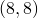
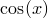

Each time a plot is placed on the multiplot page in Pyxplot, it is allocated a reference number, which is output to the terminal. Reference numbers count up from zero each time the multiplot page is cleared. A number of commands exist for modifying plots after they have been placed on the page, selecting them by making reference to their reference numbers.
Plots may be removed from the page with the delete command, and restored with the undelete command:
delete <number> undelete <number>
The reference numbers of deleted plots are not reused until the page is cleared, as they may always be restored with the undelete command; plots which have been deleted simply do not appear.
Plots may also be moved with the move command. For example, the following would move plot 23 to position  measured in centimetres:
move 23 to 8,8
In multiplot mode, the replot command can be used to modify the last plot added to the page. For example, the following would change the title of the latest plot to ‘foo’, and add a plot of  to it:
set title 'foo' replot cos(x)
Additionally, it is possible to modify any plot on the page, by first selecting it with the edit command. Subsequently, the replot command will act upon the selected plot. The following example would produce two plots, and then change the colour of the text on the first:
set multiplot plot sin(x) set origin 10,0 plot cos(x) edit 0 # Select the first plot ... set textcolour red replot # ... and replot it.
The edit command can also be used to view the settings which are applied to any plot on the multiplot page – after executing edit 0, the show command will show the settings applied to plot zero.
When a new plot is added to the page, the replot command always switches to act upon this most recent plot.